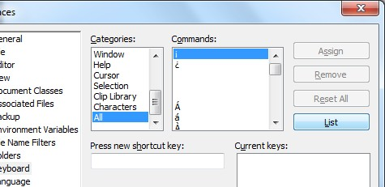
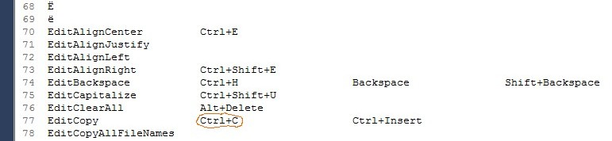
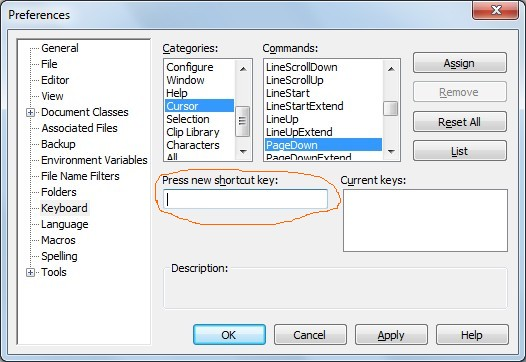

[BACK]
The "TextPad all-command-list" (or "tp-all-cmd-list", or "tpacl") is a textual list of every built-in TextPad command, and every one of their key-commands. It is also the input for the TPKC-build-process (the output is your user-specific command-configuration). The TPKC-build-process takes advantage of the fact that this is a more-than-one-space delimited list--that is, each command and each of its key-commands is separated by at least two spaces.
Contents:
To print the tp-all-cmd-list, use
TextPad > Configure > Preferences > Keyboard > Categories > "All" > [List-button]
This is printed into a read-only document called "Tool Output". Save this document to its required location in your TPKC-user-directory:
{#insert zXPROOT_DIR_tpkcUsrCfgUserBase_M_tudn}
with this exact name:
tp_all_command_list.txt
(By definition, the TextPad all-command-list is created only when selecting the "All" category.)

[top] Recommended commands to assign key-commands toAfter installing and building XBN-PhraseExpress (which includes installing the XKP and TPKC-projects), you may want to install others. These projects--in addition to depending on all TextPad-bootstraps each have their own required TextPad commands. Before these other projects are usable, their required commands must be installed (assigned at least one key-command). The following is a list of those non-TPKC projects and phrases, and the built-in TextPad built-in commands they require:
zTPFindFlag[MC,RE,WW][on,off]
zTPFindFlagMCoff. (I use
{#insert zASpFF}{#sleep 25}{#insert zMM}{#sleep 5}
zRR" for regex, "zWW" for whole-word), and
{#insert zCASpFF}{#sleep 25}{#insert zMM}{#sleep 5}
newnbskc utility (see "notes"):
CharLeftExtend (zTPSelectL1c)Note that each of these commands are already assigned in the TextPad "fresh-install" all-command-list.
[top] TextPad all-command-list: ExamplesThe following is a snippet of the "TextPad fresh-install" tpacl

[top] TP-all-cmd-list: FormatThe top two lines in the TextPad all-command-list are always the header line followed by a blank line:
COMMANDS: KEYS:
Each line below it is one line per-command, in alphabetical order. Which commands are present is dependant on which category was chosen when the tpacl is printed. (By definition, the tpacl is only when the "All" category is selected. See the top of this document for details.)
[top] TP-all-cmd-list: Requirement: Maximum allowed nbs-kcs per commandEach command has a maximum-allowable number of Non-BootStrap key-commands that may be assigned to it. This maximum is defined by the TPKC master-configuration-variable zTpkcMaxNbsKCsPerCmd (note the covenience utility "tpaclwarnkccount").
[top] TP-all-cmd-list: Requirement: Legal key-pressesThere are a small number of specific key-commands that will cause the TPKC-project to fail. These key-commands must be eliminated before attempting the TPKC-build-process. While the build-process itself will succeed with illegal key-commands, attempting to actually assign those key-commands will fail, and without any error message or diagnostic information.
You do not need to unassign these key-commands in TextPad. Just delete them from your tp-all-cmd-list
Convenience utility (xhtk): To validate your tp-all-cmd-list for illegal key-presses, open it and then within it, execute
tpaclcibkcs
Illegal key-presses (these are all TP-Key-Press[es])
Break*Tab*Ctrl+Shift+0Apps*Enter*Num 0" through "Num 9"F1 (only with no modifiers--with modifiers acceptable)* With or without any modifiers.

[top] Requirement: User-created macros and toolsThe TPKC-project only recognizes built-in commands (not user-created macros or tools, nor example macros or tools, as exist when TextPad is first installed). Therefore, only the following nine commands are recognized:
In addition, user-created tools must start with a letter lower than 't'--not 't' through 'z'.
Similar to the Tools category, only these five Macro-category commands are recognized:
In addition, the names of your user-created macros may not start with an 'm'.
Finally, the names of both user-created tools and macros may not match any of these regular expressions (as described by sub-build-proc-11). While the TPKC-build-process will succeed, assigning key-commands will fail.